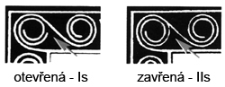
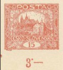
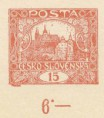

Spiral types (Is / IIs)
The fifth Hradčany design carries two types of spiral — open (Is) and closed (IIs). On some of the issued plates, the values 5h, 15h, 20h, 25h, 75h and 500h have fields with both the closed and the open spiral. Closed spirals predominate above all on plates 1 and 2 (and on plate 3 for the 5h), which makes stamps with the open spiral scarcer.
Below are the individual stamp fields of those values that carry the open spiral.

The open spiral also occurs on fields 49 and 96 of the 15h from the scarce seventh plate; I have no images of those yet.
Stamp fields
26 stamp fields in all. Hovering sharpens the thumbnail; clicking opens the specimen full-screen.
91/II
22/III
2/I
21/I
22/I
23/I
49/I
83/I

91/I

92/I

94/I
15/II
49/VII
96/VII
9/I
34/I
3/I
12/I
13/I
10/II
27/II
31/II
59/II
82/II
32/II
35/II
A detailed treatment of both types on the 15h — with the fields listed plate by plate — is on the Fifth-design types on the 15h page.